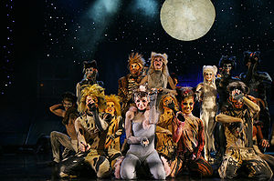
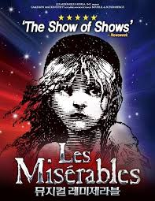
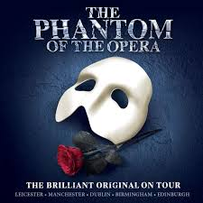

대표 흥행작
캣츠
이 뮤지컬은 영국의 시인 T. S. 엘리엇의 《지혜로운 고양이가 되기 위한 지침서》(Old Possum's Book of Practical Cats)에 나오는 14편의 시를 기초로 하여 앤드루 로이드 웨버가 곡을 붙여서 무대화하였다.하지만 일부 곡은 연출가 트레버 넌 등에 의해 작사되었다. 대표곡인 《메모리》는 T·S. 엘리엇의 미완의 초고를 바탕으로 트레버 넌이 새롭게 가사를 쓴 것이다.
트레버 넌의 연출로 1981년 5월 11일에 런던 웨스트 엔드의 ‘뉴런던극장’에서 초연되었다. 런던에서의 공연은 무대 전체가 회전하는 회전 무대를 사용하여, 개막할 때는 180도 회전된 무대를 사용했다. 초연 때 매춘부 고양이 그리자벨라를 주디 덴치가 연기할 예정이었지만 사고로 출연할 수 없기 때문에, 대역으로 《에비타》의 주역을 맡은 일레인 페이지가 발탁되어 그녀의 노래 《메모리》가 세계적인 히트송이 되었다. 또한 각 나라마다 공연 시기에 따라 연출이 미묘하게 변화하기 때문에 등장하는 고양이의 수, 종류와 안무가 다른 경우가 많다.
1982년에는 뉴욕에서 상연되었다. 미국의 뉴욕 브로드웨이에서는 약 20여 년간 공연이 된 끝에 2000년 9월에 막을 내렸고, 영국 런던 웨스트엔드에서는 2002년 5월 11일 9000회를 마지막으로 종연하였다.
레 미제라블
레 미제라블(Les Misérables)은 프랑스의 작가 빅토르 위고가 쓴 같은 제목의 소설을 바탕으로 제작된 뮤지컬이다. 뮤지컬은 19세기 프랑스를 배경으로 등장인물들이 혁명과 속죄를 위해 투쟁하는 이야기를 담고 있다. 뮤지컬 이전에 1980년에 콘셉트 앨범이 발매되었으며, 같은 해 9월 24일에 영화감독 로버트 허슨의 감독 아래 공연으로 제작되어 파리 실내 경기장에서 초연되었다. 클로드 미셸 쇤베르그(Claude-Michel Schönberg)가 작곡을 담당했고 알랭 부블리유(Alain Boublil)가 극본을 썼다. 이 듀오는 또다른 뮤지컬 미스 사이공도 함께 만들었다. 이후 런던과 브로드웨이에서 뮤지컬로 공연되었다.
이 뮤지컬은 1987년 토니 어워드에서, 최고의 뮤지컬 부문을 비롯하여 8개 부문에서 수상하였다. 노래로는 I Dreamed a Dream, Do You Hear the People Sing?(민중의 노래), One Day More(내일이면), On My Own 등이 유명하다. 2012년 영화판 레 미제라블은 뮤지컬판을 원작으로 하고 있다.
오페라의 유령
뮤지컬 《오페라의 유령》(The Phantom of the Opera)은 프랑스의 추리작가 가스통 르루가 1910년에 발표한 소설을 영국의 작곡가 앤드루 로이드 웨버가 뮤지컬로 만든 작품이다. 《오페라의 유령》은 파리 오페라극장을 무대로 천사의 목소리를 타고 났지만 사고로 흉측하게 변한 기형적인 얼굴을 가면으로 가린 괴신사 ‘유령’이 아름다운 프리마돈나 '크리스틴'을 짝사랑하면서 제작되어 파리 실내 경기장에서 초연되었다. 클로드 미셸 쇤베르그(Claude-Michel Schönberg)가 작곡을 담당했고 알랭 부블리유(Alain Boublil)가 극본을 썼다. 펼쳐지는 비극적 이야기이며, 라울과 크리스틴의 아름다운 로맨스이다. 뮤지컬 작업에는 찰스 하트와 리처드 스틸고우가 작사를 맡았다. 오리지널 무대는 카메론 매킨토시가 프로듀서를 맡고, 해롤드 프린스가 연출을 담당했다.
뮤지컬 《 오페라의 유령》은 1986년 9월 27일, 런던 Her Majesty’s Theatre에서 초연되었고 이듬해 1월, 뉴욕 Majestic Theatre에서 브로드웨이 첫 공연을 가졌다.[1] 2019년 4월 <오페라의 유령>은 브로드웨이에서 13,000회 공연을 돌파하였다. 한국에서는 2001년 LG아트센터에서 라이선스 초연이 있었고, 2005년 내한공연, 2009년 두 번째 한국어 공연, 2012년 25주년 기념내한공연이 이루어졌다. 2019년 12월, 부산 드림씨어터공연을 시작으로 2020년 서울, 대구에서 내한공연이 진행되었다.